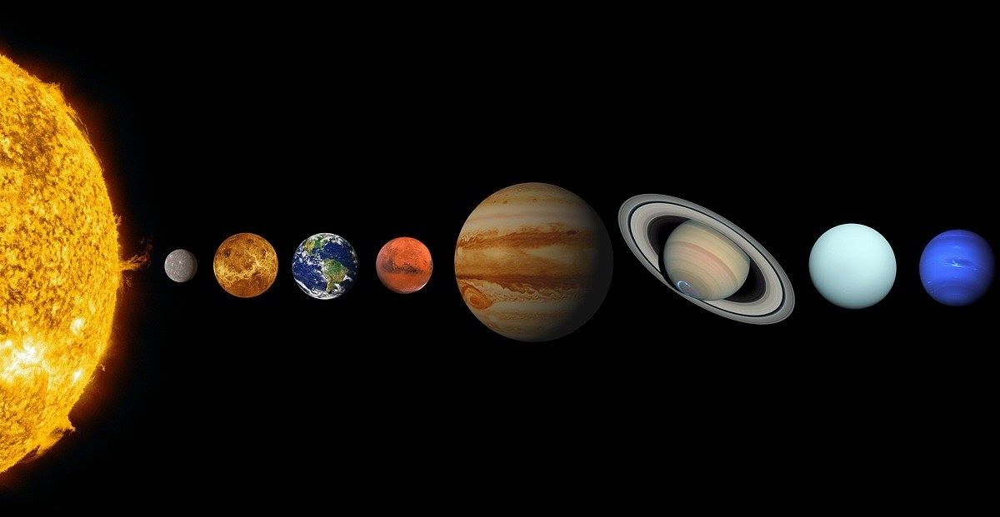
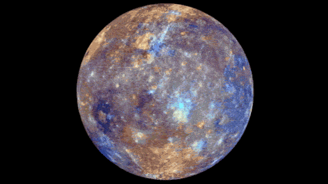
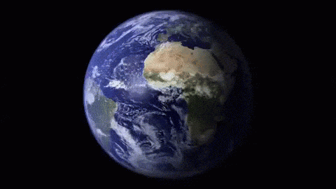
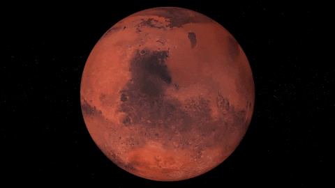
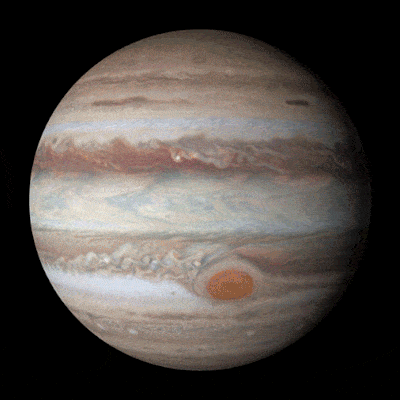
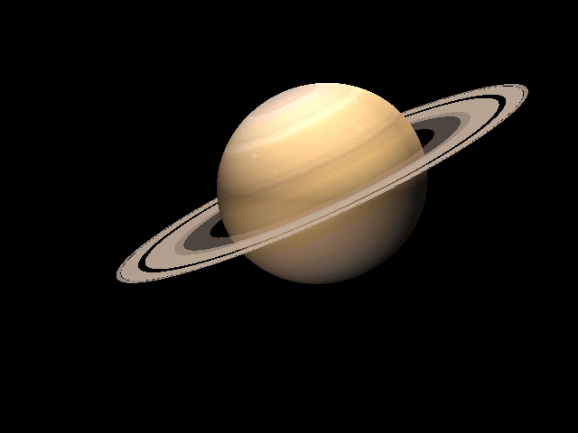
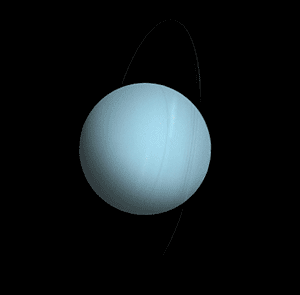

Слънчевата система е огромна космическа структура, в която се намира нашата планета Земя. В нейния център е Слънцето — звезда, която осигурява светлина и енергия, необходими за живота. Около него обикалят осем планети, както и множество луни, астероиди и комети, които заедно образуват една сложна и добре подредена система. Всяко небесно тяло в Слънчевата система има свои уникални характеристики и движение, което я прави едно от най-интересните и изследвани места във Вселената.

Осемте планети са:
Меркурий
Венера
Земя
Марс
Юпитер
Сатурн
Уран
Нептун

Меркурий
Най-близо до Слънцето се намира Меркурий — малка и скалиста планета без значителна атмосфера. Поради това температурите на повърхността му варират драстично, от изключително студени нощи до изгарящо горещи дни. Интересен факт е, че един ден на Меркурий продължава по-дълго от неговата година.
Венера
След него идва Венера, често наричана „сестра“ на Земята заради сходния си размер. Въпреки това условията там са изключително сурови. Атмосферата ѝ е много гъста и съставена основно от въглероден диоксид, което създава силен парников ефект и я прави най-горещата планета в Слънчевата система. Още по-необичайно е, че Венера се върти около оста си в обратна посока спрямо повечето други планети.

Земя
Земята е третата планета от Слънцето и единствената известна до момента, която поддържа живот. Тя има стабилна атмосфера, богата на кислород, и големи количества течна вода на повърхността си. Земята разполага и с един естествен спътник — Луната, която оказва влияние върху приливите и отливите.

Марс
Марс, известен като Червената планета заради характерния си цвят, е обект на голям интерес от учените. На неговата повърхност се намира най-високият вулкан в Слънчевата система — Олимп. Има доказателства, че в миналото на Марс е имало вода, което го прави потенциално място за бъдещи човешки мисии.

Юпитер
Най-голямата планета в Слънчевата система е Юпитер — газов гигант с масивни размери и силна гравитация. Той е известен със своето Голямо червено петно — огромна буря, която бушува от векове. Юпитер има десетки луни и много кратък ден, който продължава около десет часа.

Сатурн
Сатурн също е газов гигант, но най-впечатляващата му особеност са неговите пръстени, съставени от лед и скални частици. Една от най-интересните му луни е Titan, която има гъста атмосфера и дори езера от течен метан — нещо изключително рядко в Слънчевата система.

Уран
Уран е леден гигант с необичайно наклонена ос на въртене, което означава, че буквално се „търкаля“ по орбитата си. Това води до екстремни сезони, които могат да продължат десетилетия. Атмосферата му е изключително студена и го прави една от най-студените планети.
Нептун
Нептун е най-далечната планета от Слънцето и също е леден гигант. Той е известен със своите изключително силни ветрове, които са най-бързите в Слънчевата система и достигат над 2000 километра в час. Нептун често проявява и големи тъмни бури, подобни на тези на Юпитер.
Всички тези планети могат да бъдат разделени на три основни групи: скалисти планети като Меркурий, Венера, Земята и Марс; газови гиганти като Юпитер и Сатурн; и ледени гиганти като Уран и Нептун. Заедно те образуват една невероятно разнообразна и сложна система, възникнала преди около 4.6 милиарда години.